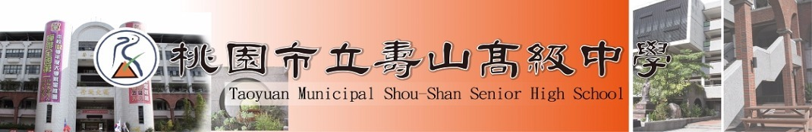

為提升壽山學風，培養良好學習態度及塑造自學風氣，特定規劃並提供良好的讀書環境，以提升其學習效果。
二、實施對象：
本校在學學生。
三、實施時間：
每週一至週五晚上6:30-9:00
四、實施地點：
K書中心1、2
五、實施方式：
1.報名
A. 採網路系統報名，帳號為學生學號、密碼為學生身分證字號。
B. 報名分為「學期申請」與「零星申請」兩種，「學期申請」可一次申請整個學期K書中心座位使用權，「學期申請」時間結束後，則開放每日中午前可上網預約「零星申請」當日剩餘之空位。
C. 每學期開學前3天上課日為高三學期申請時間、開學後第4~6天上課日為高一與高二學期申請時間，學期申請時間結束後，開放零星申請。
2.劃位：由電腦系統隨機排位，額滿截止。
3.規範：
A. 請假：除傷病、臨時狀況（由讀服組認定）外，均需事前請假(繳交假單)，未請假一律記違規。
● 請假認定：病假、中途離校均需通知讀服組，並提前領取假單，填妥請假事由後送交導師或家長簽章(事後請補看病證明或家長證明)，於當日下午一點前繳至讀服組核可。
● 缺席認定：遲到、早退（抽點時不在座位）、補簽名、補請假，均記違規1次。
B. 夜自習管理規定：
● 由教官或老師管理，幹部協助。
● 依位簽到，不得遲到、早退、換位或冒名頂替。
● 禁止於教室內使用手機、閱報、看漫畫、飲食。
● 自習時禁止走動、交談，下課時請輕聲細語。
● 不可放置個人物品於K中，圖書館不負保管責任，並於夜自習結束後清空K中座位。
4.獎勵：
A. 夜自習全勤且無違規同學，期末統一記嘉獎兩次。
B. 擔任K書中心幹部，期末統一記小功乙次。
5.懲處：
A. 遲到、早退、缺席者，由輪值老師通知家長協助關心。
B. 違規5次取消自習資格，記警告乙次。
六、本要點經行政會報決議後實施，修正時亦同。
※ K書中心家長帳密，可查詢當日申請學生名單。（帳號:parents 密碼:parents）
●儀隊
●熱音社
●KTV流行音樂社
●popping社
●locking社
●DANCE CLUB社
●熱舞社
●韓國流行舞蹈社
●ACOLALA康輔社
●橘風吉他社
●烏克麗麗社
●DOUBLE-F社
●廣播社
●管樂社
●攝影社
●喂•電影社
●西洋愛樂社
●漫研社
●象棋社
●文藝社
●手創社
●桌遊社
●辯論社
●手語社
●魔術社
●戲劇社
●烘焙社
●童軍社
●機器人社
●紫椎花社
●環保志工社
●領袖培訓社
●自願服務社
●採訪編輯社
●資訊研究社(A,B)
●排球社
●熱血籃球社